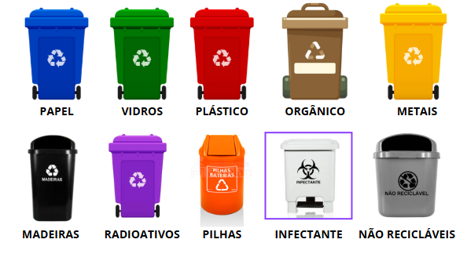

Como Reciclar
Para reciclar, o primeiro passo é separar o resíduo em reciclável e não reciclável. Em seguida, é importante limpar e secar as embalagens recicláveis antes de as colocar no cesto apropriado. Finalmente, deve-se seguir as instruções da sua cidade sobre onde e quando a coleta seletiva é realizada.
Passos para reciclar:
- Separe os resíduos: Separe o resíduo em reciclável (papel, plástico, vidro, metal) e não reciclável (resíduo orgânico, resíduos de cozinha, etc.).
- Limpe as embalagens: Lave as embalagens de plástico, metal e vidro para remover resíduos de comida ou líquidos.
- Seque as embalagens: Certifique-se de que as embalagens estão completamente secas antes de as colocar no cesto de reciclagem.
- Separe por tipo de material: Use cores ou rótulos para facilitar a separação dos materiais recicláveis (azul para papel e papelão, verde para vidro, vermelho para plástico, amarelo para metal).
- Confira as instruções locais: Consulte as regras da sua cidade sobre a coleta seletiva (dias da semana, horários, pontos de entrega, etc.).
- Reutilize e aproveite: Antes de descartar, tente reutilizar itens como embalagens, garrafas, potes, etc.
- Composte os resíduos orgânicos: Transforme restos de comida e outros materiais orgânicos em adubo para suas plantas.
Materiais recicláveis:
- Papel: Jornal, revistas, caixas de papelão, papel de escritório.
- Plástico: Garrafas, embalagens de alimentos, sacolas.
- Vidro: Garrafas, potes, embalagens de vidro.
- Metal: Latas de alumínio, embalagens de metal.
Materiais não recicláveis:
- Resíduos orgânicos: Restos de comida, cascas de frutas e legumes, borra de café.
- Resíduos de saúde: Agulhas, seringas, algodão.
- Resíduos perigosos: Tintas, solventes, produtos químicos.
Dicas adicionais:
- Reduza o consumo: Tente comprar produtos com embalagens recicláveis e evitar o desperdício de alimentos.
- Conscientize-se: Informe-se sobre a importância da reciclagem e incentive seus amigos e familiares a também reciclar.
- Procure pontos de coleta: Consulte a prefeitura ou órgãos ambientais da sua cidade para encontrar pontos de coleta seletiva.